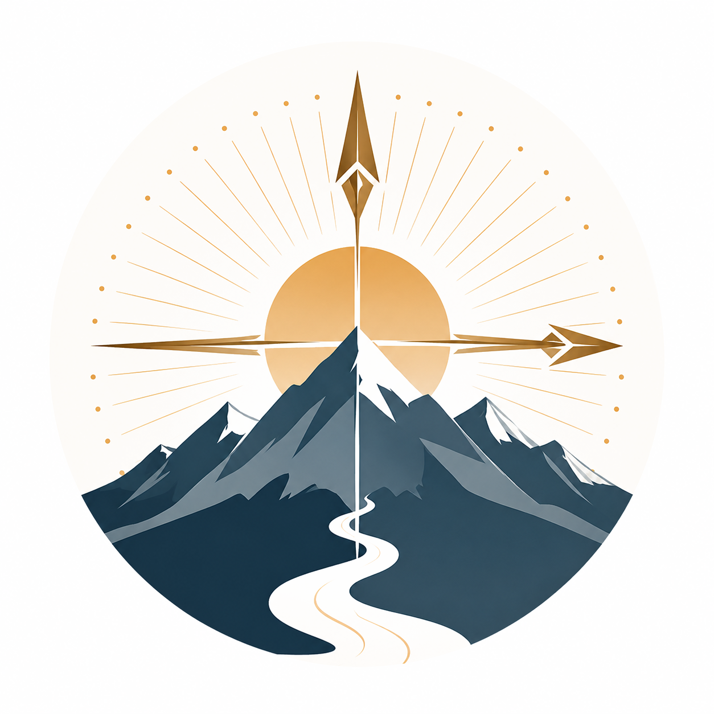

一針見血的指引，溫暖的陪伴，讓你重新看見自己的生命力。
人生方向 · 情緒價值 · 旅人視角
指引核心心境，讓你快速洞察困局所在
釐清困惑，整理思緒，找到屬於你的節奏
溫柔接住你的情緒，陪你走過每段起伏
在旅途中整理自己，探索世界，療癒自己
透過深度對話，協助你釐清目前困境，找到前進的方向。適合正在十字路口，或感到迷惘的你。
在你低落、迷失時，以低評判的方式陪你走過每一段情緒起伏。你不需要撐著，有人陪你。
方向感的建立不是靠想清楚，而是靠走出去之後才逐漸清晰的...
情緒不是問題，試圖壓制它才是。學習在情緒裡坐下來...
離開熟悉的環境，才能看清楚哪些東西是你真正想要的...
訂閱思舵週報，每週收到一篇陪你思考的文章